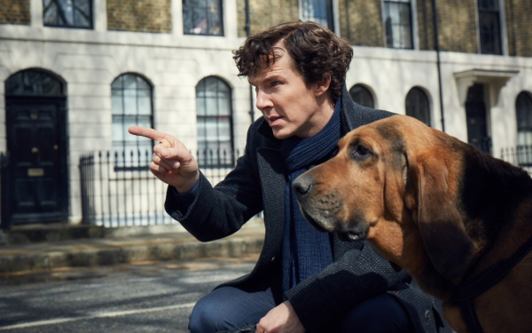
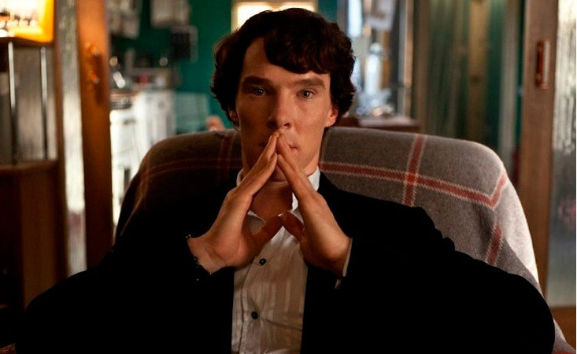
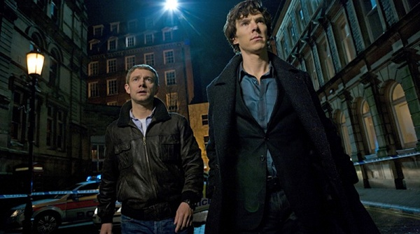

Заголовок
Слоган
Шерлок
«Ше́рлок», также известен как «Шерлок Холмс»(англ. Sherlock) — британский телесериал компании Hartswood Films, снятый для BBC Wales. Сюжет основан на произведениях сэра Артура Конан Дойля о детективе Шерлоке Холмсе, однако действие происходит (в основном) в наши дни. В 2009 году был заказан непоказанный пилотный эпизод, а в июле и августе 2010 года на телеканалах BBC One и BBC HD были показаны три девяностоминутных эпизода первого сезона. Второй сезон был показан в январе 2012 года, третий в январе 2014 с показом мини-серии на BBC One 25 декабря 2013 года. 8 января 2014 года Стивен Моффат подтвердил, что сериал продлён на четвёртый и пятый сезон и выразил надежду, что подготовить новые эпизоды удастся быстрее, чем за ставшие уже традиционными два года. Премьера четвёртого сезона состоялась в январе 2017 года, перед этим 1 января 2016 года вышел спецвыпуск «Безобразная невеста». В России все четыре сезона телесериала транслировались Первым каналом, на Fox Crime и Амедиа показывались первые два сезона.
.JPG) Авторами сериала являются Марк Гэтисс и Стивен Моффат, известные работой над телесериалами «Доктор Кто» и «Джекилл», а главные роли Шерлока Холмса и доктора Джона Ватсона исполняют Бенедикт Камбербэтч и Мартин Фримен соответственно. Съёмки проходят преимущественно в Лондоне и Кардиффе. Проект получил положительные отзывы в течение трех сезонов и был номинирован на несколько наград. В 2011 году «Шерлок» стал обладателем телевизионной премии BAFTA в категории «Лучший драматический сериал».
Авторами сериала являются Марк Гэтисс и Стивен Моффат, известные работой над телесериалами «Доктор Кто» и «Джекилл», а главные роли Шерлока Холмса и доктора Джона Ватсона исполняют Бенедикт Камбербэтч и Мартин Фримен соответственно. Съёмки проходят преимущественно в Лондоне и Кардиффе. Проект получил положительные отзывы в течение трех сезонов и был номинирован на несколько наград. В 2011 году «Шерлок» стал обладателем телевизионной премии BAFTA в категории «Лучший драматический сериал».
  
ТрейлерПостер
Шерлок
Флэш
Легенды завтрашнего дня
Форс-мажоры
Крик